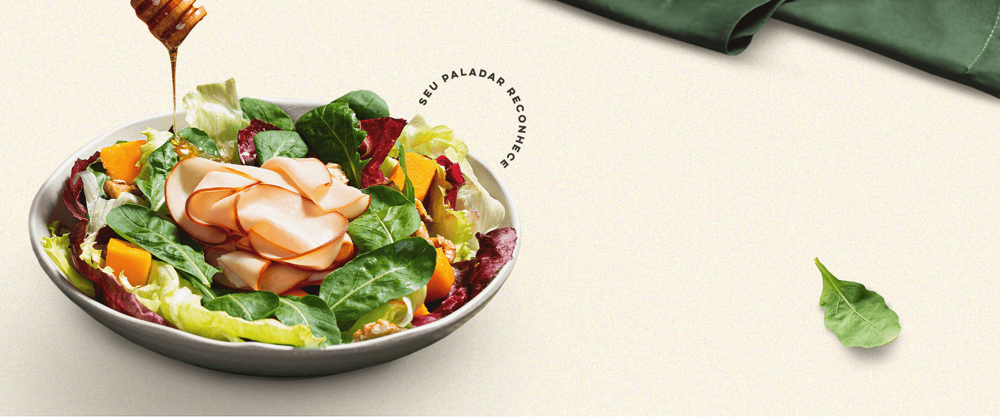

Peito de
Frango
Defumado

LEVE EM CALORIAS E
UM EXAGERO DE SABOR
DA TÁBUA DE FRIOS
aos pratos sofisticados
Do snack rápido àquela receita especial, o Peito de Frango Defumado Ceratti se adapta ao seu momento. Na salada, no sanduíche ou na entrada, cada mordida entrega leveza e sabor na medida certa.
TRADIÇÃO QUE
seu paladar reconhece
Desde 1932, seguimos o legado da charcutaria italiana, respeitando o tempo, a qualidade e a autenticidade em cada produto, trazendo uma experiência gastronômica que seu paladar reconhece.